Mollica e Moka
Pizza napoletana, versión dulce. Landing de pre-lanzamiento en Buenos Aires.
Un producto que no existía todavía en Buenos Aires necesitaba una web que contara esa novedad sin gritarla: pizza napoletana de 48 horas de fermentación, horno a leña, pero pensada de punta a punta como postre.
La landing corre una cuenta regresiva real hasta la apertura, presenta el menú completo con cada pieza fotografiada y un flujo de pago propio para reservar antes del lanzamiento — no una plantilla de e-commerce genérica.
- Sistema de color propio (paleta cálida: dorado, berry, tinta) sobre variables CSS
- Countdown funcional a la apertura
- Página de pago (pago.html) separada del flujo principal
- Botón flotante de WhatsApp e integración de Instagram/TikTok
- 100% responsive, de vitrina de escritorio a mostrador móvil
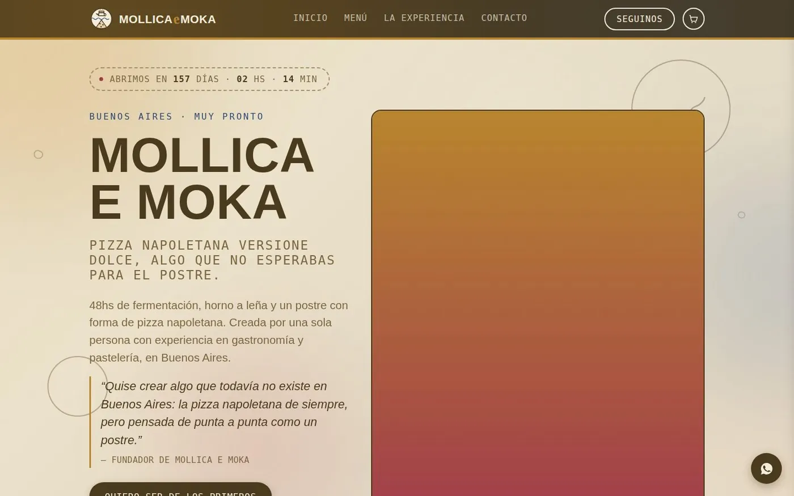
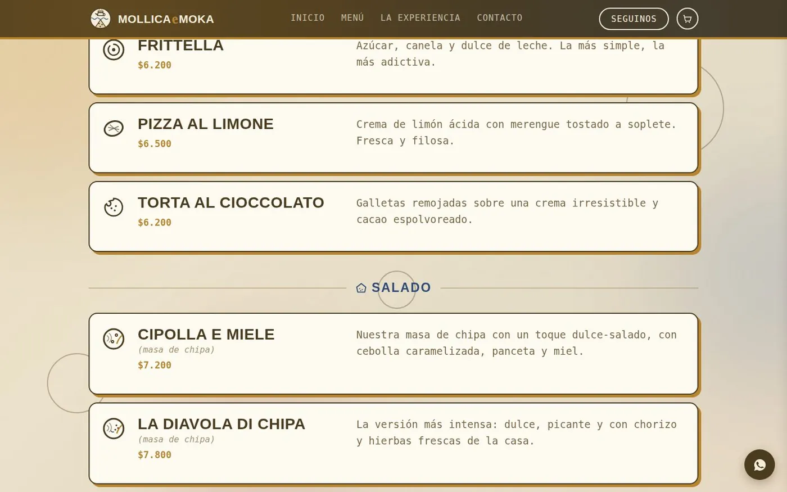
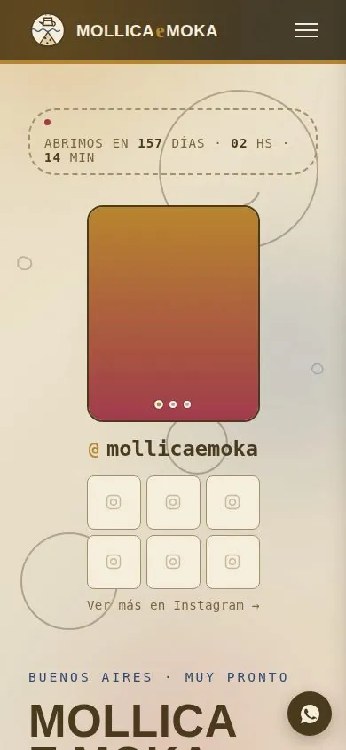
Urban Streetwear
Drops limitados, estética urbana. Tienda completa multi-página.
Una marca de streetwear necesitaba una tienda que se sintiera tan cruda como la ropa que vende: cortes oversize, drops limitados, stock que se agota. Nada de plantilla de e-commerce prearmada.
Construí la tienda completa: home con cinta animada y drop destacado, catálogo con estados de stock, carrito lateral funcional, buscador con overlay, lookbook deslizable y las páginas de soporte que un local real necesita — envíos, cambios, guía de talles, drops anteriores.
- Carrito y buscador funcionales en JS, sin frameworks
- 5 sistemas de paleta completos explorados para la misma estructura (bandera argentina, concreto industrial, ácido nocturno, terracota urbana, punk zine mono)
- 8 páginas: inicio, envíos, cambios y devoluciones, guía de talles, contacto, nosotros, drops anteriores
- Micro-interacciones: cinta animada, hover en producto, carrito lateral
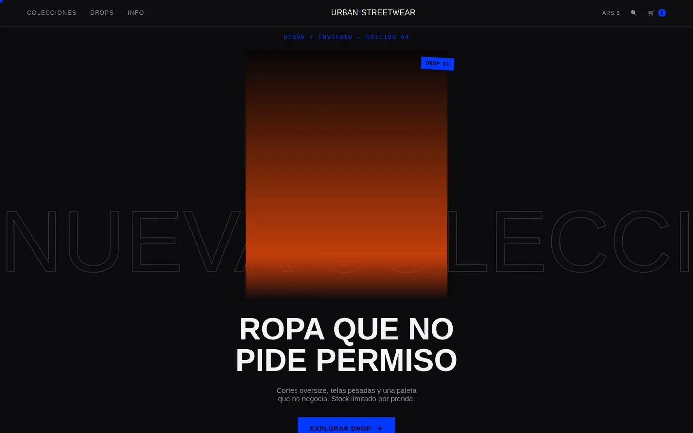
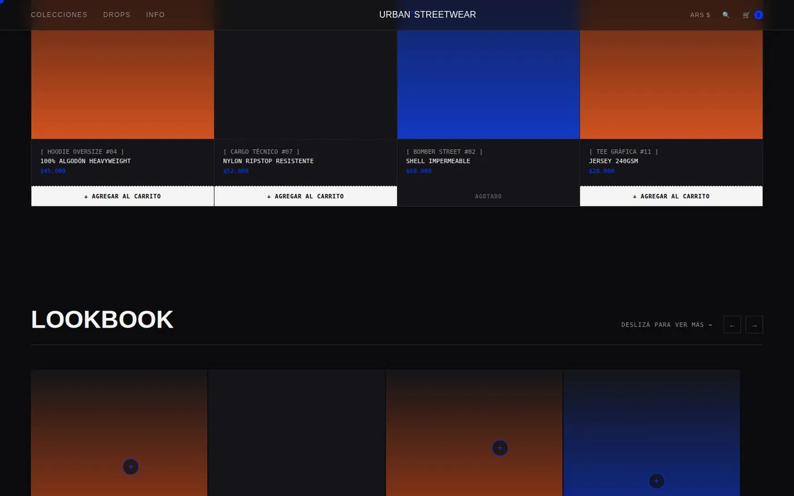
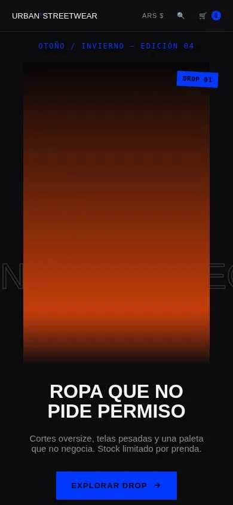
L'Atelier Bistro
Cocina de autor en Martínez. Hogareño, pero elegante.
Un bistró de barrio con alma de cocina de autor. El desafío era que la web transmitiera esa calidez de "comer en casa de alguien" sin perder la elegancia del plato.
Trabajé sobre fotos y video reales del restaurante — los chefs, el salón, el brindis — y pasé la carta completa desde el menú impreso. El sitio se divide en dos: una landing que cuenta la experiencia y una página de carta aparte que el propio dueño puede editar sin tocar código.
- Paleta cálida crema / terracota, alineada con el Instagram y la carta física
- Hero con video real del restaurante
- Carta completa: entradas, principales, postres, menú degustación, vinos y bebidas
- Edición de la carta protegida por contraseña
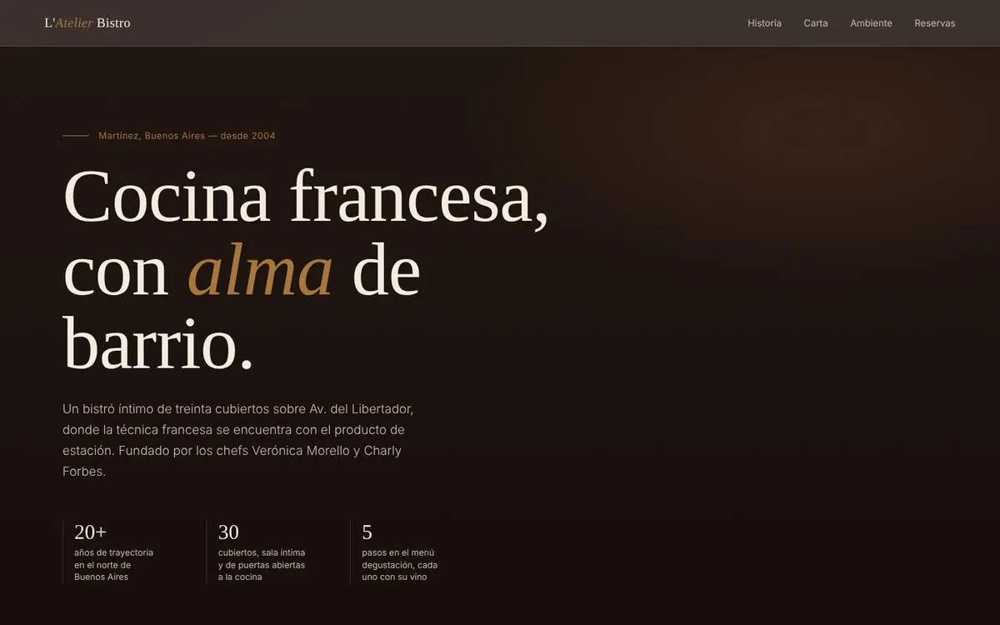
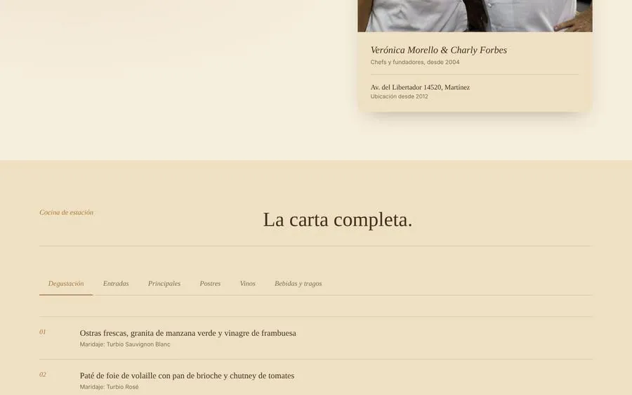
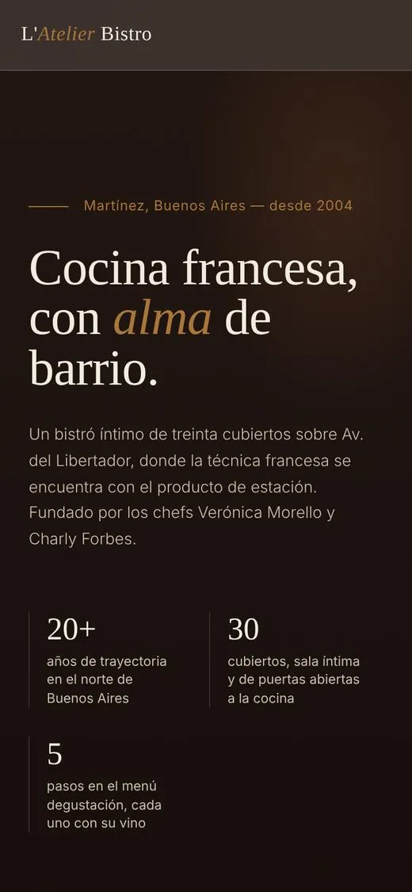
Codexa Studio
Mi estudio de desarrollo web. Marca, landing de servicios y panel interno.
Codexa es el estudio con el que ofrezco desarrollo web a clientes de cualquier país y rubro. Diseñé la identidad y una landing de servicios oscura con acento verde lima: directa, técnica y fácil de recorrer.
Detrás de la vitrina, estoy armando Codexa HQ: un panel de control propio como app Android, con "Codi", un asistente de voz que se activa por su nombre.
- Servicios: sitios a medida, React / full-stack, Python / Flask, WordPress
- Cotizador en vivo en USD, ARS y EUR, versión en inglés y agenda de reuniones
- Portfolio integrado con los proyectos reales del estudio
- Codexa HQ: APK compilada vía GitHub para uso interno
- Equipo en crecimiento: contenido, UX/UI y marketing
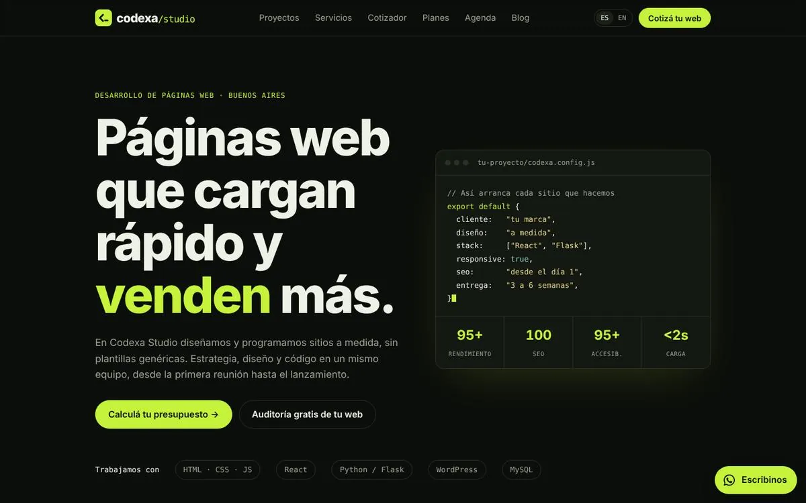
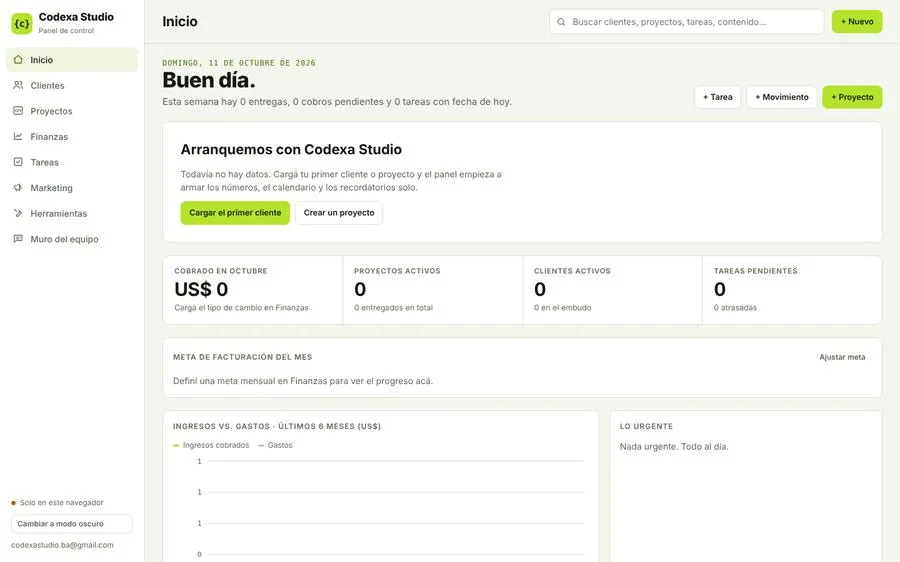
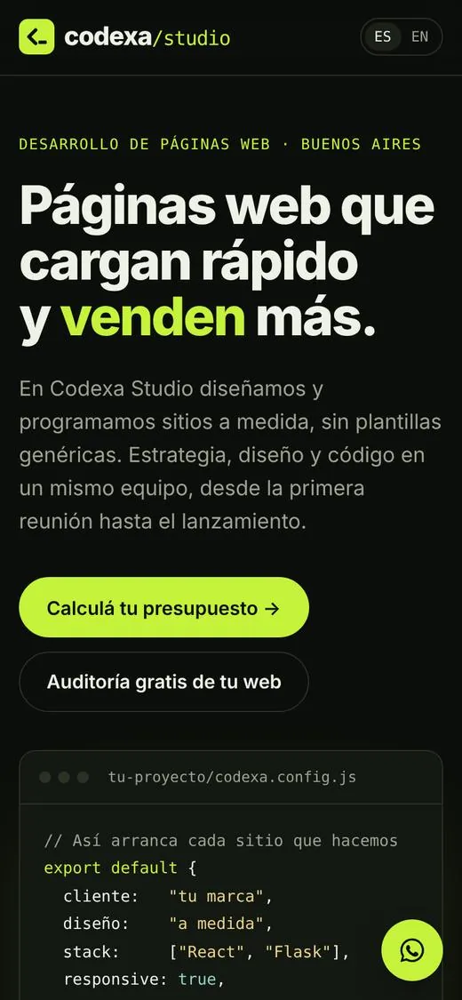
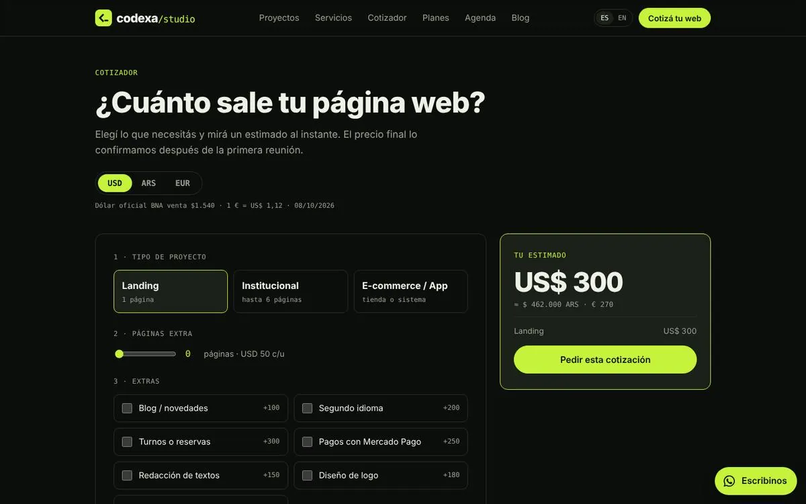